MENU
Menu
All prices include tax. Please point to the dish when ordering.
All prices include tax. The Japanese name is shown with each dish — just point to it when ordering.
Tap a photo to enlarge. Allergies or dietary needs? Please tell our staff.
Seasonal Specials
Autumn Irodori Gozen: Sat, Oct 10 – Tue, Nov 3, 2026 (Culture Day)
Weekday specials (Saiju / Fukuju): October only — Mon, Tue, Thu and Fri (except public holidays)
Limited-time menus; discounts do not apply.
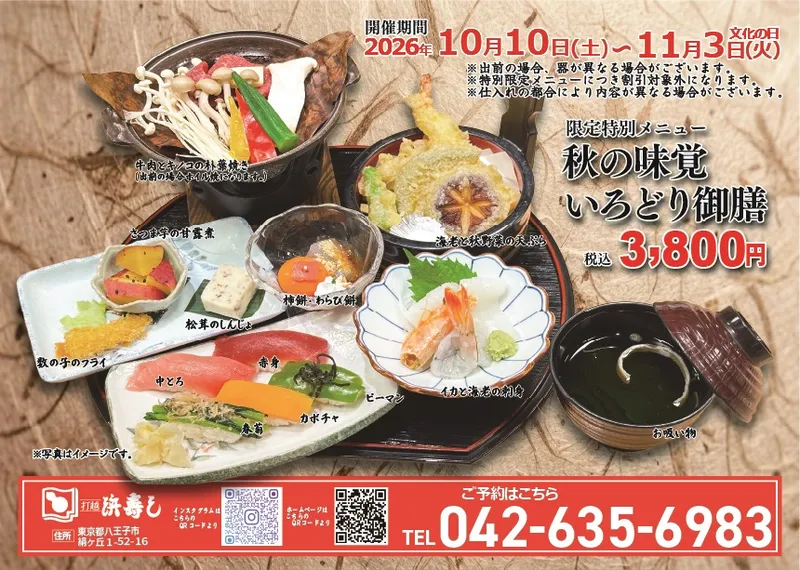
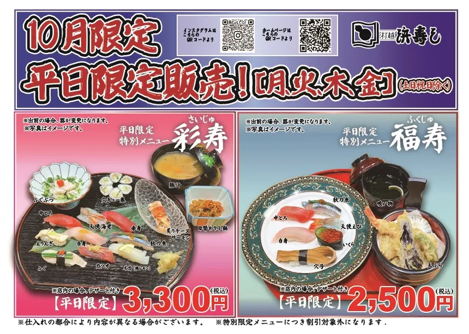
Contents may change depending on what is in season. Photos are for illustration.
Shokado — a course served in a lacquered box
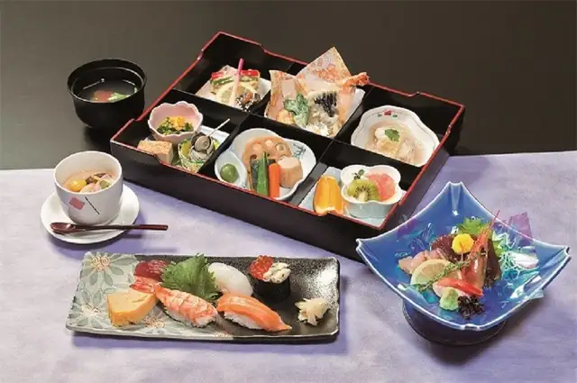
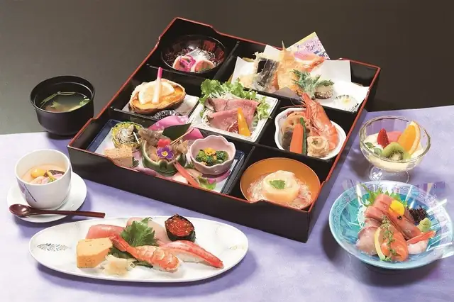
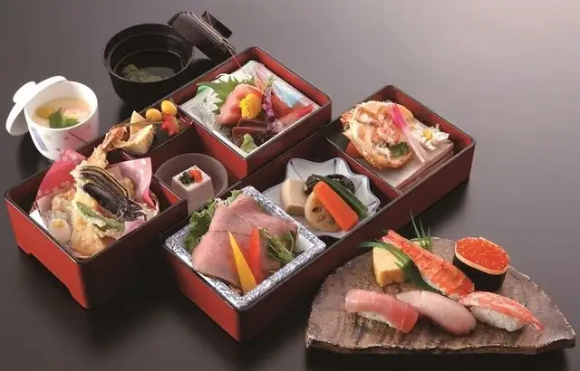
Courses

Prices are per person. We recommend reserving courses by phone: +81-42-635-6983 (Japanese).
Dishes change with the season and the day's market.
All-you-can-drink option available (2 hours, groups of 15 or more).

- 1st tray — seasonal appetizers, a small dish and three kinds of sashimi
- 2nd tray — Japanese black wagyu shabu-shabu hot pot, a fried dish and a steamed dish
- 3rd tray — 5 pieces of nigiri, clear soup and dessert
The photo shows the Medium Fatty Tuna Kaiseki.
Dishes change with the season and the day's market.
We recommend reserving kaiseki by phone.
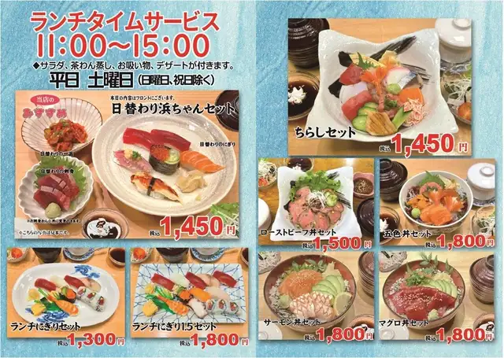
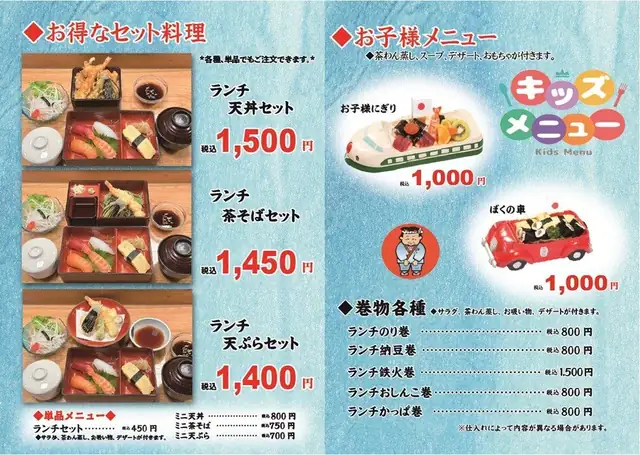
Mon–Sat 11:00–15:00 (except Sundays and public holidays), dine-in only.
Every lunch set comes with salad, chawanmushi (savory egg custard), clear soup and dessert.
Lunch Sets
Value Sets
Single items: Lunch add-on (salad, chawanmushi, soup, dessert) ¥450 / Mini tempura bowl ¥800 / Mini green tea soba ¥750 / Mini tempura ¥700
Lunch Rolls
Kids' meals are also available at lunch, at lunch prices — see the Kids tab.


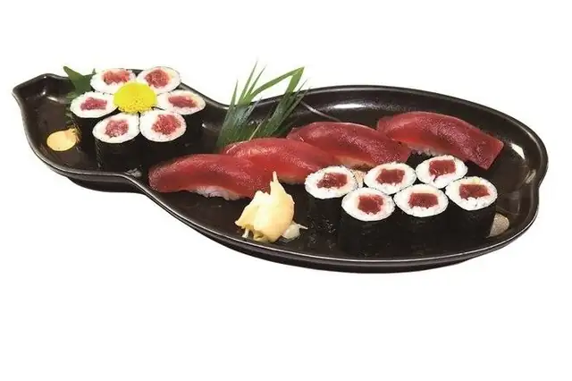
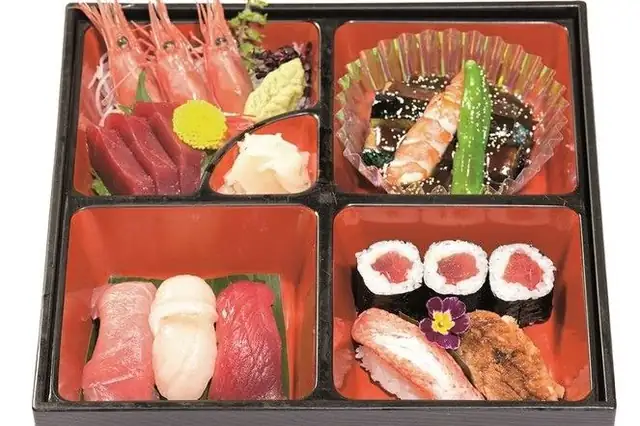
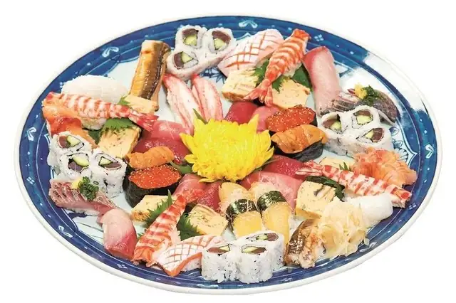
A large nigiri platter to share
Toppings change with the season and the day's market.
Lunch (Mon–Sat 11:00–15:00, except Sundays and public holidays): comes with chawanmushi and salad.
Dine-in: comes with soup and coffee jelly ice cream.
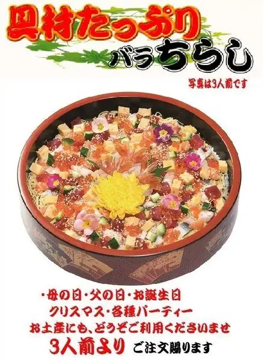


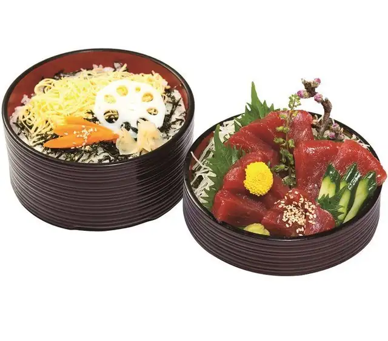
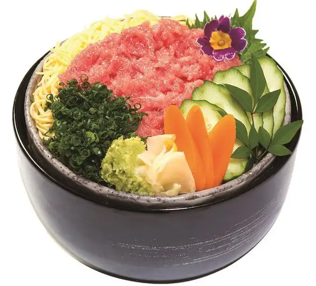

Toppings may change depending on the day's market.
Lunch (Mon–Sat 11:00–15:00, except Sundays and public holidays): comes with chawanmushi and salad.
Dine-in: comes with soup and coffee jelly ice cream.
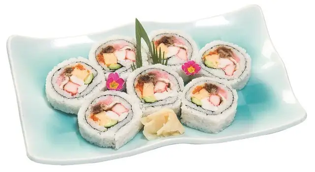
Contents may change depending on the season and the day's market.
At lunch, rolls are cheaper and come with salad, chawanmushi, soup and dessert — see the Lunch tab.

Grilled eel on rice — large portion

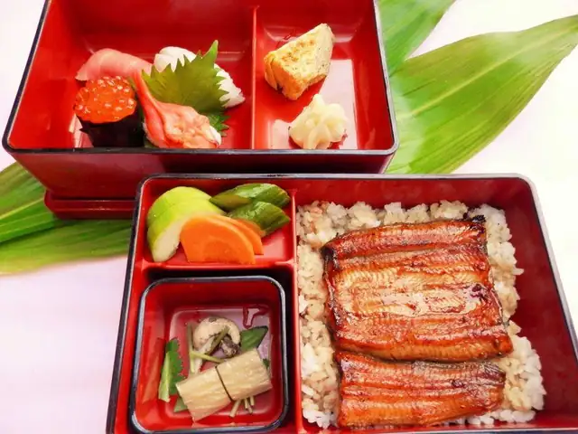
We use Japanese-grown eel. Prices may change with the market.
Lunch (Mon–Sat 11:00–15:00, except Sundays and public holidays): comes with chawanmushi and salad.
Dine-in: comes with coffee jelly ice cream.
Pufferfish (Fugu) Dishes
All prices include tax.
Wild tiger pufferfish is seasonal and may not always be available.

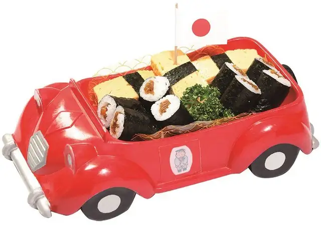
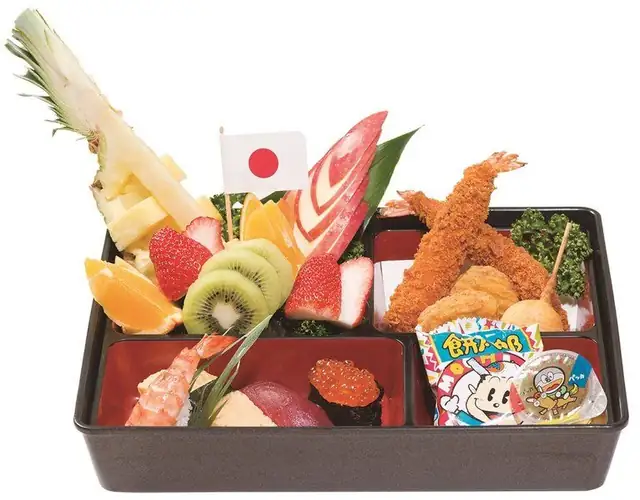
Kids' meals are also available at lunch, with special lunch prices (for example, Kids' Nigiri ¥1,000 and My Car ¥1,000).
Each comes with chawanmushi, soup, dessert and a small toy.

Lightly battered and fried seafood and vegetables
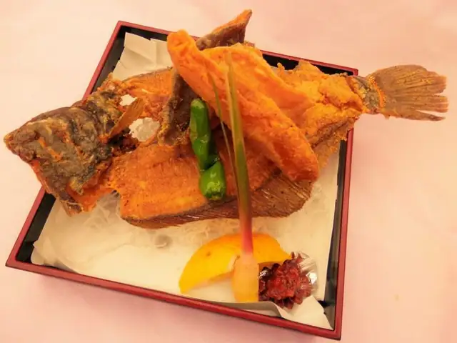
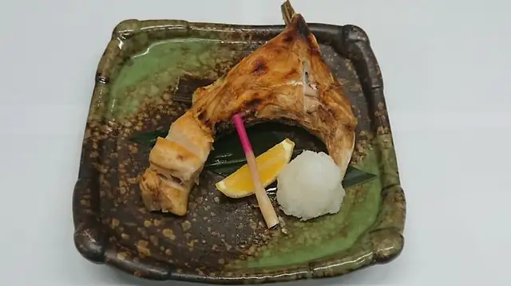

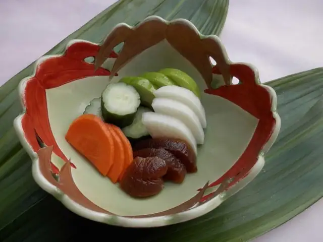
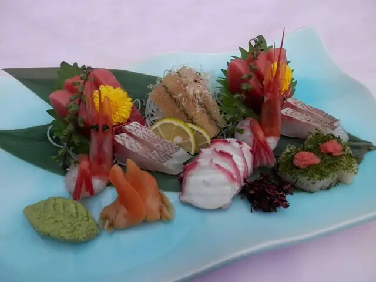
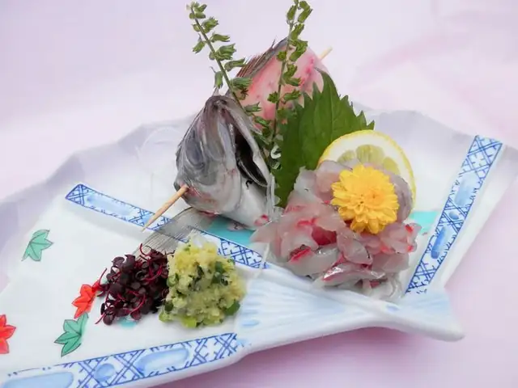
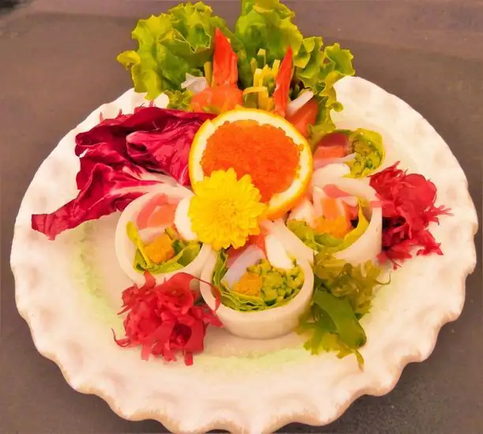
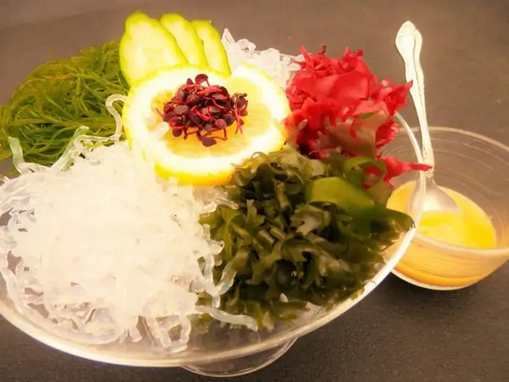
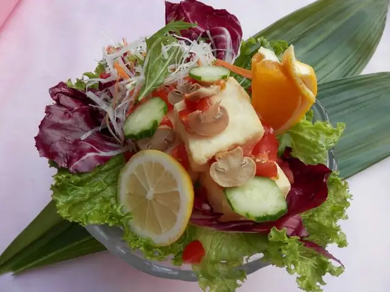
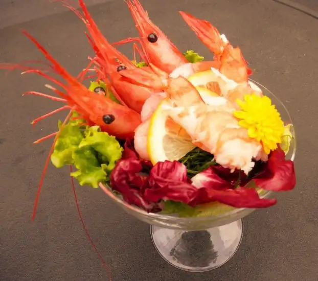
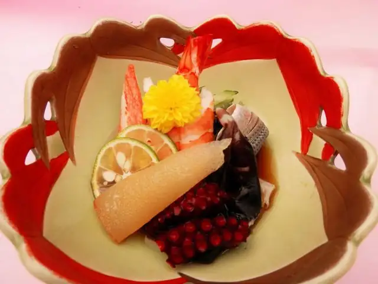
Prices marked "from" change with the season and the day's market.
Sake 日本酒
- Takao no Tengu — local Hachioji sake, 720 ml 高尾の天狗¥5,000
- Takao no Tengu — glass¥1,300
- Suiro — junmai daiginjo, fruity, 720 ml 翠露¥5,000
- Shirakabegura — junmai, 640 ml 白壁蔵¥3,600
- Mio — sparkling sake, 300 ml 澪¥1,500
- Gokai — unpasteurized, 300 ml 豪快 生¥1,700
- Sawanoi — dry junmai, 300 ml 澤乃井¥1,800
- Gokai — dry, 1 go (180 ml) / 2 go 豪快 辛口¥600 / ¥1,200
- Yamadanishiki — glass 山田錦¥1,000
Shochu 焼酎
- Ikkomon — sweet potato, 720 ml / glass 一刻者¥5,500 / ¥800
- Ikkomon Highball, 280 ml 一刻者ハイボール¥850
- Osumi — sweet potato, 900 ml / glass 大隅（芋）¥3,700 / ¥600
- Kurokame — sweet potato, 720 ml / glass 黒甕¥3,700 / ¥600
- Gokujo Takara Shochu, 700 ml 極上宝焼酎¥3,500
- Den'en Gold — barley, 720 ml 田苑 GOLD¥4,000
- Osumi — barley, 900 ml / glass 大隅（麦）¥3,700 / ¥600
- Shiranui — barley, 720 ml / glass 不知火¥5,500 / ¥800
Mixers: soda water ¥300 / lemon slices (5) ¥400 / pitcher of tea ¥500 / pickled plum (1) ¥500
Beer & Non-alcoholic Beer
- Draft beer — The Premium Malt's, medium / small 生ビール¥750 / ¥650
- Bottled beer — The Premium Malt's, medium bottle 瓶ビール¥750
- All-Free (non-alcoholic) — small bottle オールフリー¥600
- All-Free (non-alcoholic) — draft mug¥600
Highball, Gin & Wine
- Kaku Highball (whisky & soda) 角ハイボール¥700
- Roku Gin & Soda 六ジンソーダ¥780
- Glass of wine — red / white グラスワイン¥750
- Bottle of wine — red / white フルボトルワイン¥4,500
Sours & Fruit Liqueurs
- Black Oolong Highball 黒ウーロンハイ¥800
- Lemon / Yuzu / Green Apple / Kyoho Grape / Grapefruit Sour サワー各種¥700
- Oolong Highball / Uji Matcha with Shochu ウーロンハイ・宇治抹茶割り¥700
- Apricot Liqueur / Plum Wine (umeshu) あんず酒・梅酒¥700
Liqueurs: on the rocks, with water or with soda.
Soft Drinks
- Black Oolong Tea 黒ウーロン茶¥500
- Oolong Tea / Lemon-lime Soda / Coca-Cola / Ginger Ale / Orange Juice / Apple Juice ソフトドリンク¥300
All prices include tax.